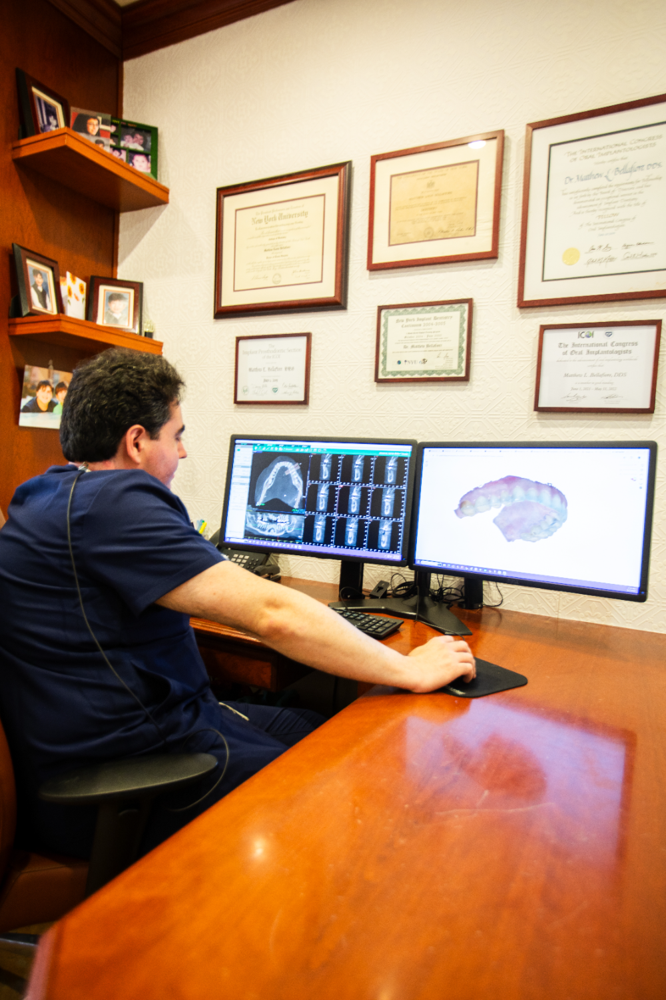
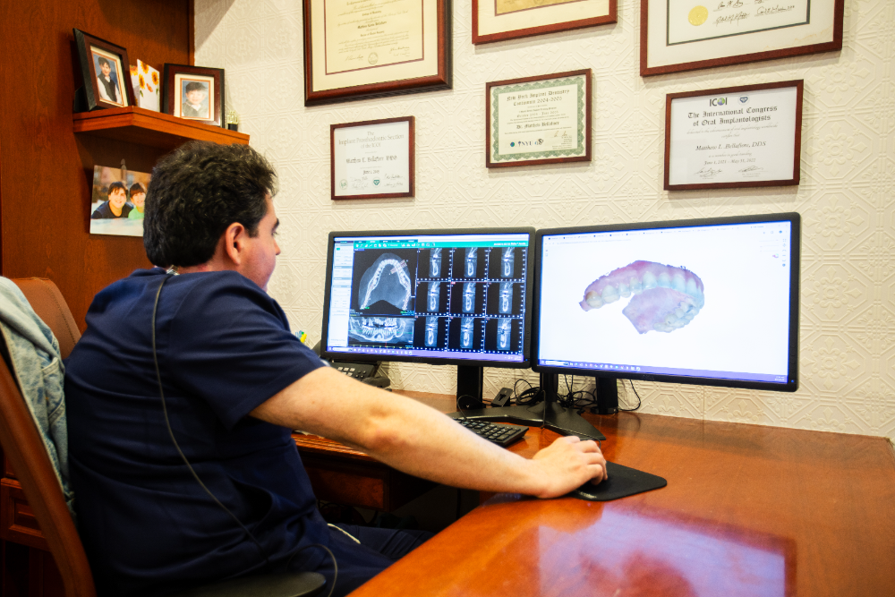

Advanced, Computer-Guided Dental Implants & Oral Surgery
Reclaim 100% of your natural biting power, youthful facial structure, and chewing confidence. Our Brooklyn Heights surgical team combines high-definition 3D CBCT imaging with premium bio-compatible materials to replace missing teeth permanently.

The Permanent Gold Standard in Missing Tooth Replacement
Single Tooth Implant Placement
A bio-compatible titanium post is placed precisely into the jawbone to mirror a natural tooth root, capped flawlessly with a custom porcelain crown without altering adjacent healthy teeth.
Implant-Supported Dental Bridges
Ideal for replacing multiple teeth in a row safely, anchoring a fixed porcelain bridge directly to dental implants to distribute biting forces without damaging adjacent enamel.
Full-Arch Fixed Restorations (All-on-4 / All-on-6)
A permanent, life-changing full-mouth solution that replaces an entire upper or lower arch of missing or failing teeth with a non-removable bridge supported by strategically placed implants.
3D CBCT Surgical Guidance
High-resolution Cone Beam Computed Tomography maps out your exact nerve pathways and bone density in 3D, allowing our doctors to plan implant placement with pinpoint digital accuracy.
Precision Bone Grafting & Ridge Augmentation
Advanced surgical placement of specialized materials to rebuild jawbone volume lost to previous extractions, creating a robust, perfectly stable foundation for secure implant placement.
Who Are Dental Implants For?
- Patients struggling with loose, slipping partials or traditional complete dentures.
- Individuals facing tooth extractions or dealing with missing teeth that impair proper chewing and clear speech.
- Neighbors experiencing progressive facial shifting or a "sunken look" caused by natural jawbone loss after tooth extractions.
- Uninsured or insured individuals seeking premium surgical tooth replacement backed by flexible monthly payment terms.
Your Oral Surgery & Implant Journey
Upbeat Welcome & Refreshments
Arrive to a warm, friendly greeting from our team. Relax in our traditional lobby and help yourself to premium Keurig coffee, tea, refrigerated water, or seasonal hot cider.
Guided Surgical Consultation
We review your medical history and listen closely to your health goals. To combat dental anxiety, we formulate a calm environment, map out your steps with no fluff, and offer nitrous oxide or anti-anxiety options to keep you completely relaxed.
High-Definition 3D Imaging
We take an instant, low-radiation 3D CBCT scan to evaluate your bone density and plan your computer-guided implant placement with extreme accuracy.
Specialized Placement & Care
Relax in our windowed treatment rooms featuring massaging operatory chairs and comforting blankets. Following your gentle surgical placement, our team presents you with a soothing, lavender-scented hot towel to kickstart your healing process.
Decades of Specialized Surgical Experience
Dr. Bellafiore’s Advanced Implant Heritage
Dr. Matthew Bellafiore has owned and operated this practice for over 30 years. He has dedicated his career to advanced continuing education in dental implant placement and complex full-mouth rehabilitation, giving you elite clinical confidence.
Active Dawson Academy & ICOI Participation
Dr. Bellafiore actively participates in the world-renowned Dawson Academy and holds credentials with the International Congress of Oral Implantologists (ICOI). Your implants are placed with a master-level understanding of complete jaw joint health.
Pristine Academic Backgrounds
Dr. Alexander Black (Touro College of Dental Medicine alumnus) and Dr. Becca Baer (Indiana University graduate and former Chief Resident at Montefiore Health System) collaborate directly on your cases, ensuring your final porcelain implant crowns meet elite aesthetic standards.
Rebuild Your Smile with Full Confidence
See how our computer-guided dental implants and advanced porcelain crowns have successfully restored function and beauty for our Brooklyn Heights neighbors.
Clear, Fluff-Free Implant Pricing & Financing
Dental implant surgery is a high-value, lifelong investment in your structural health. While we operate out-of-network to ensure we use only premium, bio-compatible materials rather than average insurance-grade shortcuts, we accept and process all PPO claims paperwork to maximize your out-of-network benefits (Review details on our Insurance page). We are also actively in-network with Delta Dental and CSEA. To help bridge any financial gaps, our front desk team can instantly assist you in applying for easy monthly payment financing through Cherry and Sunbit, featuring soft credit checks and fast approvals (Explore details on our Financing page). Uninsured patients can also utilize our specialized In-House Membership Plan to secure helpful treatment discounts across our entire service suite.
Frequently Asked Questions
Is the dental implant surgical procedure painful?
Most patients are completely surprised by how comfortable the procedure is. Under precise local numbing or comforting nitrous oxide, you will feel only minor pressure. Our use of 3D CBCT digital surgical guides means the placement is minimally invasive, resulting in minimal bleeding and a highly predictable, rapid recovery.
What happens if I need to cancel my implant surgery appointment?
Because surgical appointments require significant laboratory coordination, customized sterile setups, and hours of dedicated doctor time, we require a strict 48 hour cancellation notice. Failure to give 48 hours' notice will result in a $125.00 fee. You can contact us smoothly via text, email, or phone.
What is a bone graft, and will I automatically need one for my dental implant?
A bone graft is a highly specialized, routine procedure where bio-compatible material is placed to rebuild jawbone volume. If you have had a missing tooth for a long period, your bone naturally shrinks; our high-definition 3D CBCT scan tells us instantly if you need a graft to build a stable foundation for your implant.
How long does the entire dental implant process take from surgery to the final crown?
The complete timeline usually spans three to six months. This careful window is required to allow your jawbone to naturally fuse with the bio-compatible titanium post (osseointegration), ensuring a permanent, rock-solid anchor before Dr. Black or Dr. Baer attach your final porcelain crown.
Are dental implants covered under your private In-House Membership Plan?
While our membership plan is primarily designed to fully cover your routine preventive cleanings, exams, and diagnostic X-rays, enrollment immediately unlocks exclusive, transparent discounts on restorative treatments and advanced surgical services across our Brooklyn practice.

Permanently Restore Your Natural Bite Mechanics & Confidence
Dealing with missing teeth or loose partials impacts your systemic nutrition and long-term facial structure. Using our high-definition 3D CBCT scans and computer-guided surgical templates, Dr. Bellafiore permanently anchors highly durable titanium implants topped with custom porcelain crowns that mirror natural anatomy. Schedule a comprehensive implant evaluation to reclaim 100% of your biting force.
